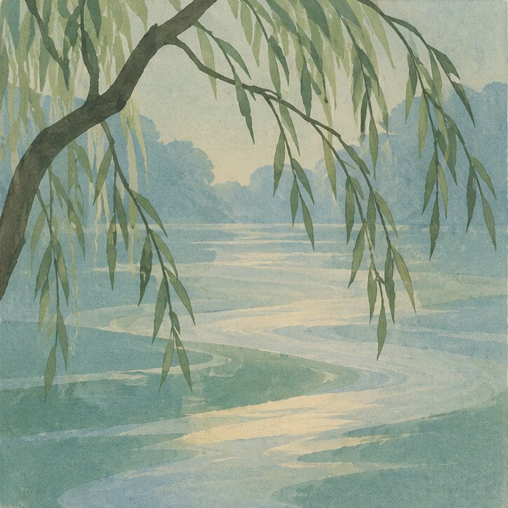

Claude Debussy · Deux arabesques
Arabesque No. 1

There’s a lovely rhythmic puzzle in this piece. One hand divides the beat in two while the other divides it in three. Listen to either hand alone and it sounds quite simple. Together they make a line that seems to float just above the beat.
The middle section settles into a more direct tune. When the opening pattern comes back, listen for the melody tucked inside the moving notes.
My recording
Recording to come.